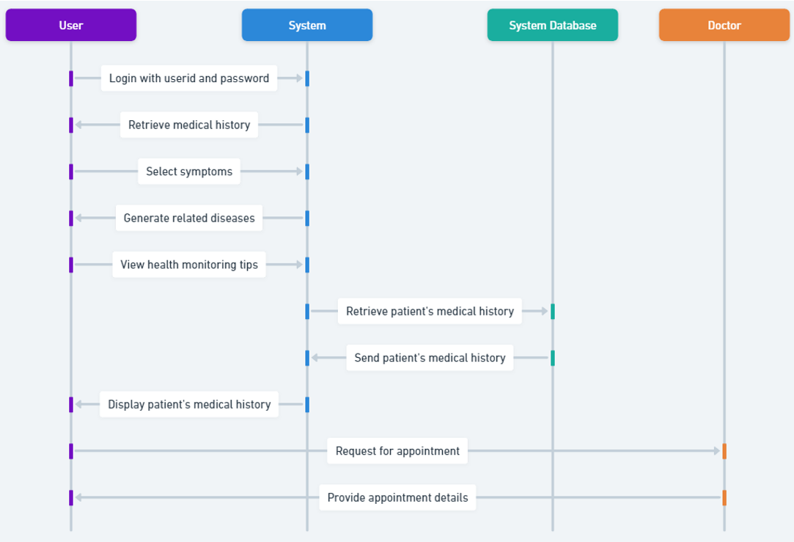
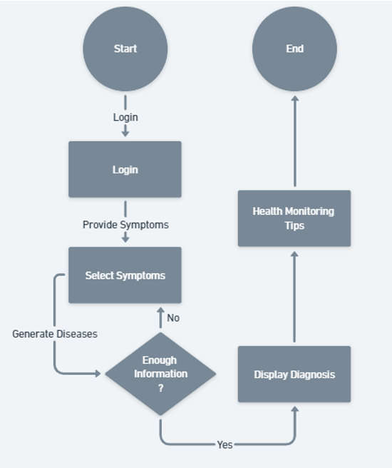

OMDS is a symptom-based online medical diagnosis platform built as a final-year B.Tech (ICT) project at Marwadi University, guided by Prof. Harikesh Chauhan. It connects patients and doctors: patients log in, select their symptoms, and the system generates likely related conditions along with health monitoring tips, while also surfacing their medical history and letting them book appointments directly with a doctor.
On the backend, the system pairs a Python Flask API with a Firebase real-time database for secure, up-to-date data, while PHP handles select server-side processing against MySQL. A companion Android app, built in Kotlin, extends the experience on mobile — including an integrated "OMDS ChatMachine" assistant that answers health queries in natural language. Doctors get their own dashboard to manage clinic hours, view appointments, and write patient reports with medicines, tests, and precautions.
A patient logs in, provides their symptoms, and the system checks whether it has enough information to narrow things down — looping back for more detail if needed — before displaying a diagnosis and tailored health monitoring tips.

The sequence diagram below shows the full interaction across the user, the system, its database, and the attending doctor — from login and symptom selection through to appointment booking.
